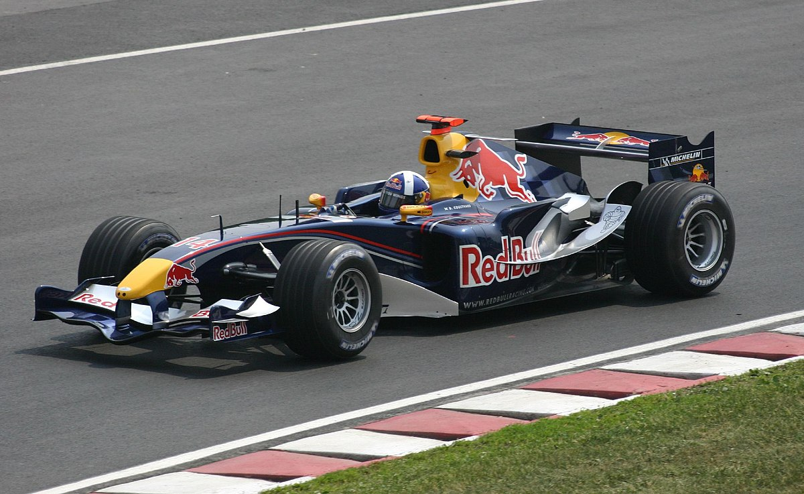
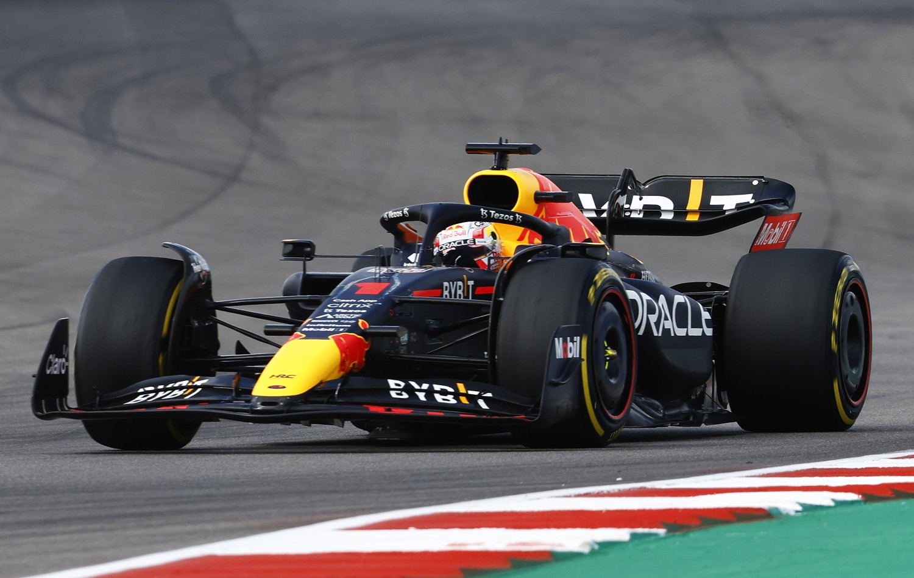

Red Bull Racing
2005-Present
Red Bull Racing is a prominent Formula 1 racing team that has made a significant impact on the sport since its inception. Here is a brief history of Red Bull Racing in Formula 1:
Formation and Early Years (2004-2009)
- Red Bull Racing, officially known as Red Bull Racing Team, was founded in 2004 when Austrian energy drink company Red Bull purchased the Jaguar Racing Team.
- Red Bull Racing made its Formula 1 debut in 2005, competing with drivers David Coulthard and Vitantonio Liuzzi.
- The team initially faced challenges and struggled to compete at the front of the grid, but they steadily improved their performance and infrastructure.
Emergence as a Contender (2010-2013)

- Red Bull Racing's breakthrough came in 2010 when they secured their first Drivers' Championship and Constructors' Championship titles.
- Sebastian Vettel, a young German driver, became the youngest World Champion at the time, winning the Drivers' Championship.
- The team's technical chief, Adrian Newey, played a crucial role in designing competitive cars.
- Red Bull Racing continued its dominance, with Vettel winning four consecutive Drivers' Championships from 2010 to 2013.
Transition and Continued Success (2014-2018)

- Formula 1 introduced significant rule changes in 2014, shifting to hybrid power units. Red Bull Racing's dominance declined, but they remained competitive.
- Daniel Ricciardo joined the team and added to their success with race wins.
- Max Verstappen, a young Dutch driver, joined the team in 2016 and quickly became one of the sport's rising stars.
- Red Bull Racing maintained its status as a top-tier team, consistently challenging for race wins and podiums.
Partnerships and Engine Suppliers (2019-Present)
- In 2019, Red Bull Racing announced a partnership with Honda as their engine supplier.
- The team was rebranded as Aston Martin Red Bull Racing in 2021, following a title sponsorship deal with luxury carmaker Aston Martin.
- In 2023 it was announced that RB Powertrains would form a partnership with Ford, creating Ford Red Bull powertrains.
- Red Bull Racing has continued to be a competitive force in Formula 1, with Max Verstappen winning the 2021 and 2022 World Drivers Championships.
Throughout its history in Formula 1, Red Bull Racing has been known for its innovative approach to racing, a strong emphasis on driver development, and a commitment to fostering young talent. Their distinctive blue and red livery, as well as the iconic Red Bull logo, have made them one of the most recognizable teams on the grid. While they faced challenges and changes over the years, Red Bull Racing remains a significant presence in the world of Formula 1, and are currently dominating the sport.